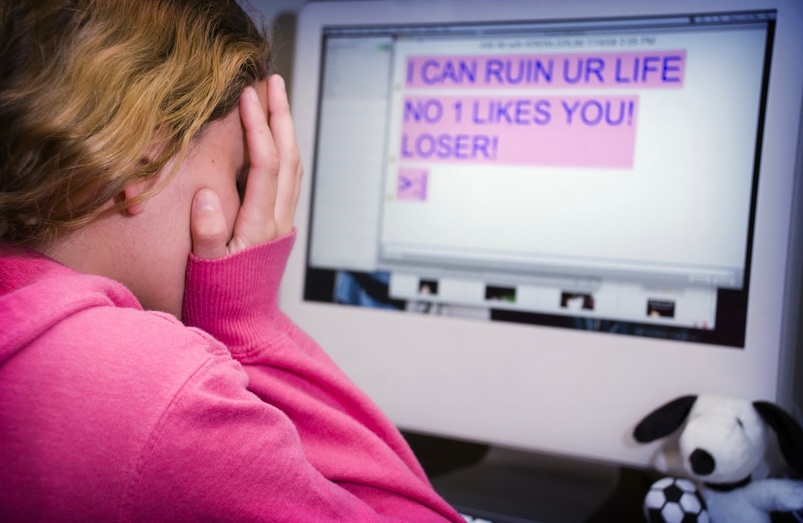

cyber harassment ?
Cyberbullying is a serious and widespread problem on social media, including Facebook. It can have devastating consequences on the mental health and well-being of victims. Here are some key figures that illustrate the extent of this phenomenon.
Firstly, according to a survey by the Pew Research Center, 41% of Americans have witnessed online harassment, while 66% have witnessed cruel and offensive behavior. Additionally, a study by the National Center for Education Statistics found that 21% of high school students in the United States have been victims of cyberbullying.
In terms of specific figures for Facebook, a survey by the Royal Society for Public Health in the UK found that Facebook was the social media platform most likely to be used for cyberbullying, with 45% of users reporting having witnessed cyberbullying on the platform.
Furthermore, Facebook has implemented measures to combat cyberbullying, such as the ability to report inappropriate content and online activity monitoring. However, these measures are not always sufficient to prevent cyberbullying, and many users continue to experience online attacks.
Finally, cyberbullying can have serious consequences on the mental health and well-being of victims, such as anxiety, depression, social isolation, and decreased self-confidence. According to a study by the University of Washington, cyberbullying victims are more likely to suffer from depression and have suicidal thoughts.
In conclusion, cyberbullying is a growing problem on Facebook, with many users witnessing cruel and offensive behavior. Although Facebook has implemented measures to combat cyberbullying, these measures are not always sufficient to prevent online attacks. Cyberbullying can have serious consequences on the mental health and well-being of victims, emphasizing the importance of combating this phenomenon.